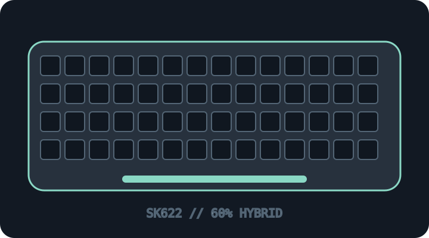

[ KEYBOARDS AND INTEGRATED POINTING DEVICES // IDENTIFIED SKU ]
Cooler Master SK622 Space Gray (SK-622)
Compact low-profile mechanical hybrid keyboard with USB-C wired and Bluetooth modes.

MODEL IDENTIFICATION: SK622 Space Gray; regional SKU suffix and keyboard layout vary—verify the box/unit identifier. This archive entry identifies a real manufacturer product/variant; physical labels and dated manuals supersede generalized family descriptions.
Model specifications
| Catalog subcategory | Keyboards and integrated pointing devices |
|---|---|
| Exact model / SKU | SK622 Space Gray; regional SKU suffix and keyboard layout vary—verify the box/unit identifier. |
| Layout and key arrangement | 60% compact layout with secondary key functions, no dedicated function row or numeric keypad; full-size modifiers/legends depend on region. |
| Switch type / mechanism | Low-profile TTC mechanical switches (Red/Blue/Brown option varies by SKU); no user hot-swap claim should be assumed. Keycap profile differs from standard-height boards. |
| Interface and protocol | USB-C wired data plus Bluetooth 4.0 wireless; Bluetooth can pair with multiple devices. NKRO is specified in wired USB mode; do not assume the same rollover over Bluetooth. |
| Key rollover / anti-ghosting | N-key rollover is documented for wired USB mode. Cooler Master does not promise the same count in Bluetooth mode; wireless rollover must be tested separately. |
| External dimensions | 293 × 103 × 30.28 mm with feet closed; up to approximately 43.03 mm with feet open. Manufacturer spec is model-family data; note feet position when measuring. |
| OS and host compatibility | Manufacturer lists Windows 8+, macOS 10.10+, iOS and Android compatibility over supported connection methods. MasterPlus+ configuration and firmware tools have narrower OS support; confirm Bluetooth profile on mobile hosts. |
| Revision / regional caveat | SK622 differs from wired SK621 and other SK-series products. Color, switch, language layout, regional code, Bluetooth firmware and bundled cable vary; legacy Cooler Master pages may present regional specs or downloads differently. |
Preservation and service notes
Retain the original USB-C cable and Bluetooth pairing notes; document firmware and switch option before using MasterPlus+. Protect the low-profile keycaps and avoid applying force to the folding feet.
Record the as-found SKU/revision, host OS and version, connection method, firmware, keymap and test method. Do not infer rollover or compatibility from the connector alone; clearly separate unpublished manufacturer specifications from tested observations.
Manufacturer sources
- Cooler Master SK622 Space Gray technical specificationsManufacturer legacy technical specification page for the SK622.
- Cooler Master SK622 downloads and manualsManufacturer legacy product downloads and setup materials.
Manufacturer pages can be revised or retired. Retain the applicable dated manual/specification with the physical equipment record.